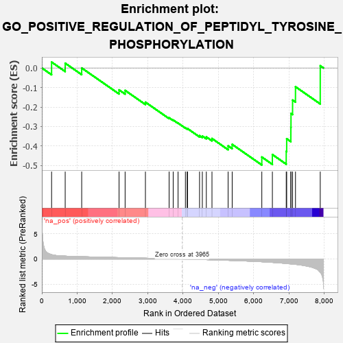
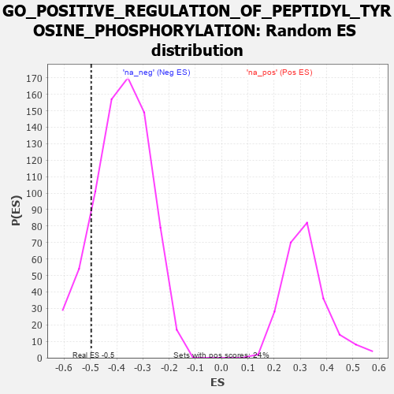

| | | Dataset | 7d |
| Phenotype | NoPhenotypeAvailable |
| Upregulated in class | na_neg |
| GeneSet | GO_POSITIVE_REGULATION_OF_PEPTIDYL_TYROSINE_PHOSPHORYLATION |
| Enrichment Score (ES) | -0.49683803 |
| Normalized Enrichment Score (NES) | -1.3080964 |
| Nominal p-value | 0.13756613 |
| FDR q-value | 0.46368945 |
| FWER p-Value | 1.0 |
Table: GSEA Results Summary

Fig 1: Enrichment plot: GO_POSITIVE_REGULATION_OF_PEPTIDYL_TYROSINE_PHOSPHORYLATION
Profile of the Running ES Score & Positions of GeneSet Members on the Rank Ordered List
| PROBE | GENE SYMBOL | GENE_TITLE | RANK IN GENE LIST | RANK METRIC SCORE | RUNNING ES | CORE ENRICHMENT | | 1 | HGF | | | 276 | 0.870 | 0.0302 | No |
| 2 | HES5 | | | 661 | 0.571 | 0.0244 | No |
| 3 | SRC | | | 1128 | 0.459 | -0.0000 | No |
| 4 | SYK | | | 2186 | 0.278 | -0.1123 | No |
| 5 | MIF | | | 2357 | 0.252 | -0.1149 | No |
| 6 | ACVR1 | | | 2932 | 0.161 | -0.1752 | No |
| 7 | DOK7 | | | 3603 | 0.059 | -0.2551 | No |
| 8 | HSF1 | | | 3718 | 0.039 | -0.2666 | No |
| 9 | DGKQ | | | 3856 | 0.020 | -0.2823 | No |
| 10 | TAL1 | | | 4064 | -0.018 | -0.3070 | No |
| 11 | MTOR | | | 4114 | -0.025 | -0.3113 | No |
| 12 | ABL1 | | | 4125 | -0.027 | -0.3106 | No |
| 13 | ERCC6 | | | 4464 | -0.087 | -0.3467 | No |
| 14 | NTRK2 | | | 4543 | -0.104 | -0.3487 | No |
| 15 | FGFR3 | | | 4656 | -0.129 | -0.3532 | No |
| 16 | FBXW7 | | | 4816 | -0.161 | -0.3612 | No |
| 17 | EPHA4 | | | 5273 | -0.265 | -0.3989 | No |
| 18 | DLG4 | | | 5388 | -0.293 | -0.3914 | No |
| 19 | EHD4 | | | 6227 | -0.545 | -0.4562 | Yes |
| 20 | ACE | | | 6526 | -0.674 | -0.4434 | Yes |
| 21 | CSPG4 | | | 6918 | -0.878 | -0.4272 | Yes |
| 22 | LRP8 | | | 6931 | -0.889 | -0.3624 | Yes |
| 23 | PIBF1 | | | 7049 | -0.966 | -0.3051 | Yes |
| 24 | GRM5 | | | 7053 | -0.969 | -0.2332 | Yes |
| 25 | CSH1 | | | 7098 | -0.995 | -0.1645 | Yes |
| 26 | PTPRJ | | | 7180 | -1.054 | -0.0961 | Yes |
| 27 | FYN | | | 7881 | -2.622 | 0.0113 | Yes |
Table: GSEA details [plain text format]

Fig 2: GO_POSITIVE_REGULATION_OF_PEPTIDYL_TYROSINE_PHOSPHORYLATION: Random ES distribution
Gene set null distribution of ES for GO_POSITIVE_REGULATION_OF_PEPTIDYL_TYROSINE_PHOSPHORYLATION